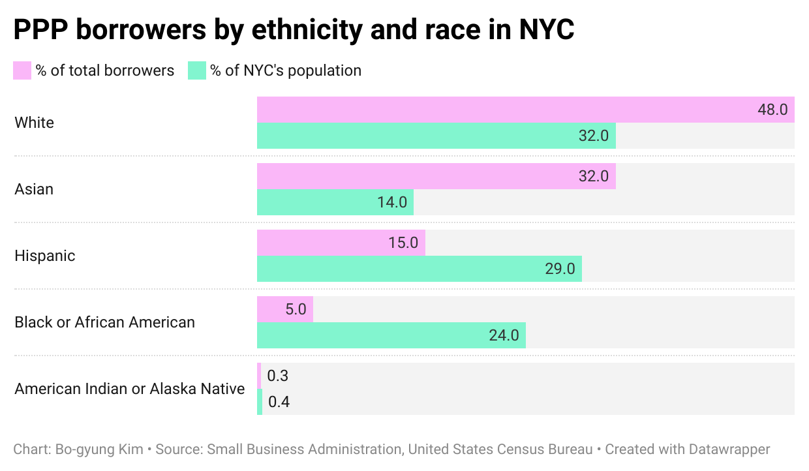
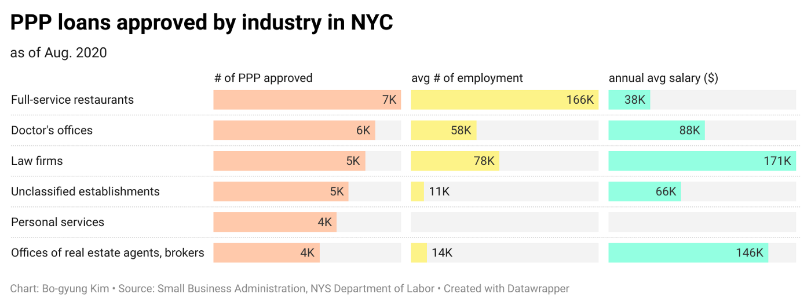
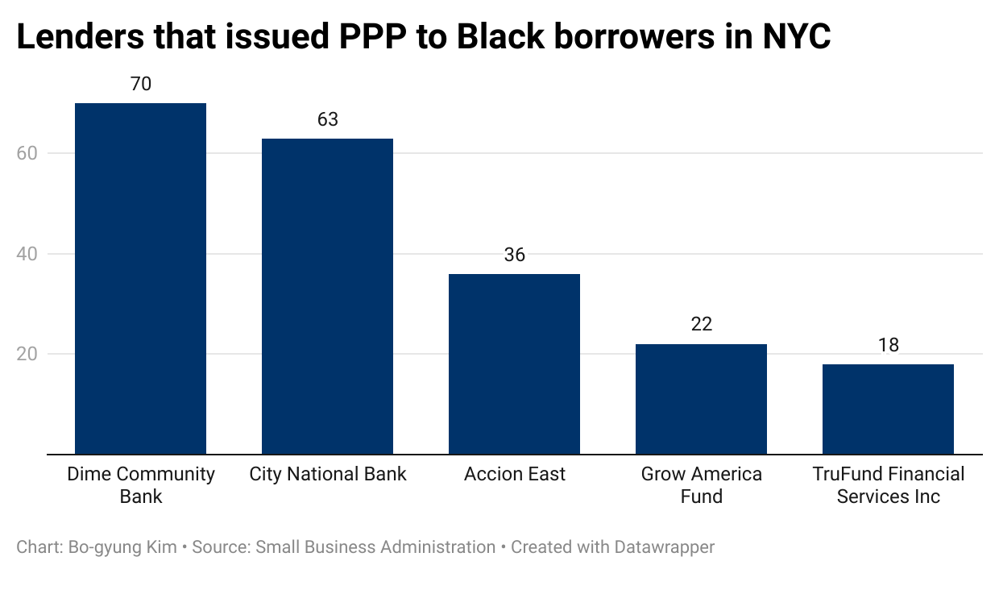
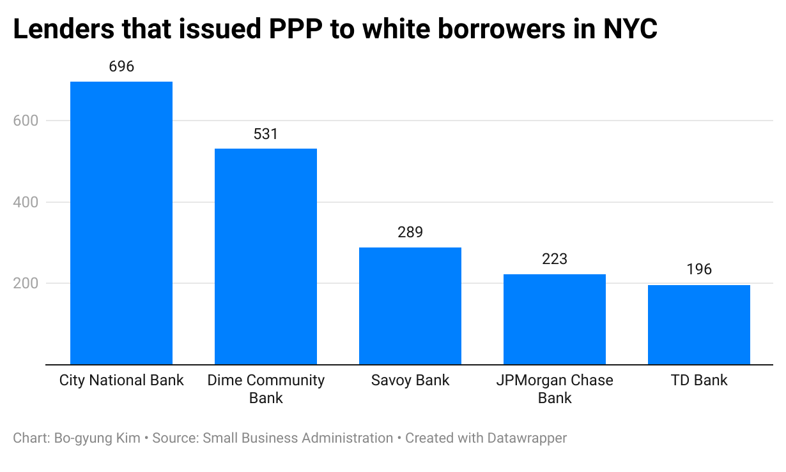
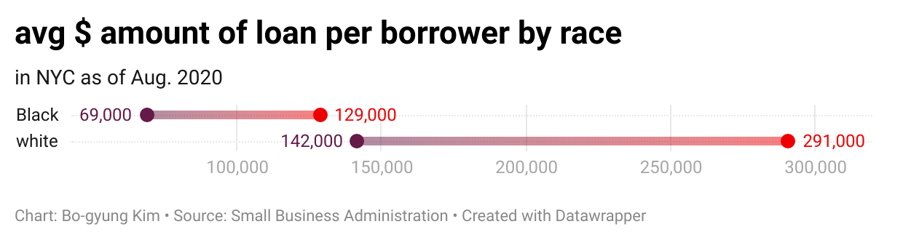

This article was written for the Columbia Graduate School of Journalism.
NEW YORK -- Black-owned businesses in New York City were disproportionately hurt by the structure of the first two rounds of coronavirus stimulus relief. Black business owners say that was mainly because pre-existing financial relationships with banks played a crucial role in receiving the Paycheck Protection Program loans.
“The primary reason,” said Ron Busby, founder and president of the U.S. Black Chambers, explaining the inequity, “was the legislation wasn’t created with Black businesses in mind.”
Busby pointed out that Black businesses have weaker lines of credit with larger banks and the stimulus program designed to cover payrolls kept Black entrepreneurs at bay from the forgivable loan.
Some 185,000 small-and mid-size businesses in New York City were approved for the pandemic-related loans between April and August of 2020, according to an analysis by the Columbia Journalism School on the Small Business Administration data. But minority-owned businesses were marginalized in the distribution of the stimulus fund, laying bare racial disparities.
The finding comes as applications for another round of PPP loans are underway, through the end of next month.

Nearly one in four people in the city are Black Americans, according to the U.S. Census Bureau. But they represented 5 percent of the total loan borrowers in the city, according the data analysis. Some 9,410 loan applicants in the city identified their race and ethnicities.
White and Asian Americans both had higher ratios of borrowers than their demographic size, the data analysis showed.
Jacqueline Orange, owner of a sightseeing and food tour business in New York City’s Harlem, is one of the 5 percent of Black entrepreneurs who received a PPP loan last year.
She expressed mixed feelings about the loan, which she said partially helped her finances but “wasn’t effective.”
Her biggest point of concern with the loan was its vague instructions that initially caused her to fill out an incorrect application. A detailed instruction she later received from her bank put her on the right track, she said.
“The key was how to fill it out,” Orange said, “if nobody could explain it to you, it was very difficult to know what numbers went where on the application.”
The SBA said in a statement that it is working to improve loan accessibility to underserved small businesses and that it plans to implement changes to resolve data glitches and eligibility concerns.
“We are committed,” said Michael Roth, the SBA’s senior advisor to the administrator, in a statement, “to taking additional steps to ensure that there is equitable access for underserved businesses, and that we are leading with empathy to support small businesses in a difficult spot.”
Stimulus programs, such as the PPP loan, inject much-needed funds to financially strained businesses that have had to close their brick-and-mortar stores or operate at a reduced capacity due to Covid-19.
A New York Federal Reserve report pointed out that the pandemic disproportionately impacts Black-owned businesses. The number of active Black businesses dropped 41 percent across the country, between February and April 2020, according to the report. That is almost twice the national average rate and 1.5 times higher than their white counterparts cited in the report.
To alleviate the financial burden on small businesses, PPP loans are forgiven to employers who meet rules that include loans spent payrolls and expenses. About 25 percent of the total loan amount has been forgiven as of Feb. 3, according to the SBA.
But the first two rounds of the refundable loan left out communities that were most in need of financial aids. A broader look at the data shows that high-paying businesses with pre-existing relationships with banks and access to information were among the top borrowers in New York City: doctor’s offices, law firms and offices of real estate agents and brokers.

As the criteria for loan eligibility and loan forgiveness indicate, the PPP loan was created to cover payrolls — leaving out Black businesses, most of which do not have employees, according to Busby.
Among 2.6 million Black-owned businesses in the U.S., around 2.5 million do not have employees, according to the U.S. Black Chambers.
“If you don’t have an employee, you can’t apply,” Busby said, “that was the biggest hurdle.”
Even though some Black-owned businesses have connections to larger banks, Busby said, they were directed to turn to Community Financial Institutions, as banks profited based on the size of loans.


“They [lenders] wanted the average size loan to be $150,000,” Busby said. “That was never a good loan for a Black-owned business,” he added, referring to the fact that before the pandemic, Black-owned businesses had annual revenues of about $75,000.
The average dollar amount of loans approved to Black and white borrowers in the city also reflects the economic disparity that existed before Covid, the data analysis found.

Black borrowers were approved for half the amount approved to their white counterparts, data analysis showed.
For stimulus programs to reach more Black Americans, Busby said, “they need to be intentional. They need to be Black specific.”
Go to BKNews’ GitHub for data analysis